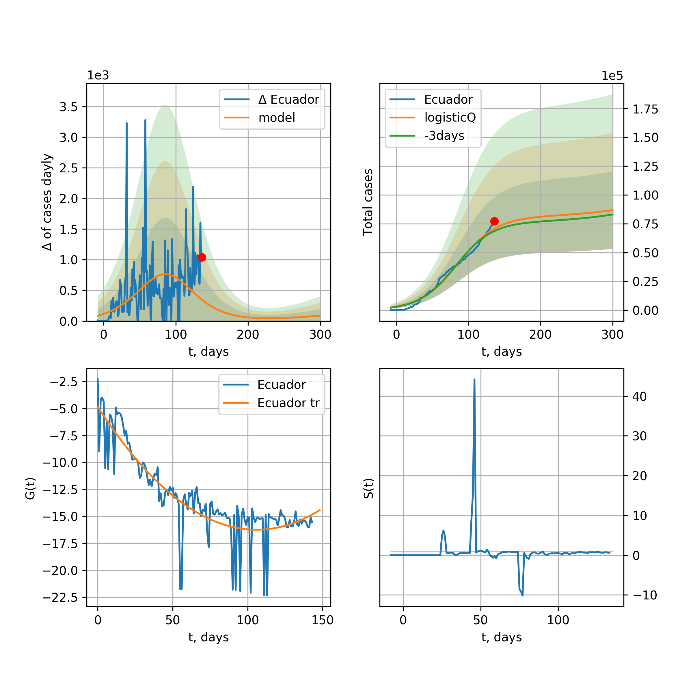

Multi-logistic model of COVID-19 dynamics
Model, code, results
Project maintained by algmaknick Hosted on GitHub Pages — Theme by mattgraham
World

World data at: 2020-05-12
+3 day model MAPE: 0.038940
model: bi-logisticQ
coeffs: [ 4.35129506e+06 1.03577335e-06 7.55478746e+01 -9.06868301e+04]
S.Korea scenario coeffs: [0.35416971, 0.02606324, 4.35859408, 19.30413219]
rational stdev: 0.191809
forecast at the end of period: +305 days
deltaDaycases: 2056
total cases: 6042219 ± 1158949
total death: 407549 ± 234514
tri-logisticQ approximation splitting points: 26,54
trend coefficient of determination: 0.957216
intercept_: -9.890425229004336
coeffs_: [ 0. -0.26614025 0.00124975]
trend1 coefficient of determination: 0.900515
intercept_: -20.622215746086294
coeffs_: [ 0. 0.23801537 -0.00236922]
trend coefficient of determination: 0.992676
intercept_: -2.9305689316548253
coeffs_: [ 0. -0.28977437 0.00129234]
European Union

European Union data at: 2020-05-12
+3 day model MAPE: 0.013604
model: logisticQ
coeffs: [ 1.07799495e+06 8.11491446e-07 4.94345225e+01 -1.44698544e+05]
S.Korea scenario coeffs: [0.35416971, 0.02606324, 4.35859408, 19.30413219]
rational stdev: 0.428738
forecast at the end of period: +200 days
deltaDaycases: 348
total cases: 1453964 ± 623369
total death: 153411 ± 197319
trend coefficient of determination: 0.988200
intercept_: -3.005496579166797
coeffs_: [ 0. -0.32909063 0.00169935]
USA

USA data at: 2020-05-12
+3 day model MAPE: 0.010569
model: Richards
coeffs: [ 1.80693700e+06 3.83533066e+00 -4.65812962e+01 1.33263595e-02]
S.Korea scenario coeffs: [0.36242246, 2.56241634, 1.84890887, 0.13324732]
rational stdev: 0.283095
forecast at the end of period: +347 days
deltaDaycases: 1005
total cases: 2401780 ± 679931
total death: 142242 ± 120803
trend coefficient of determination: 0.944024
intercept: -0.990555
slope: -0.047634
Spain

Spain data at: 2020-05-12
+3 day model MAPE: 0.011853
model: Richards
coeffs: [ 2.80762145e+05 7.82540972e+00 -4.39899075e+01 8.47304599e-03]
S.Korea scenario coeffs: [0.36242246, 2.56241634, 1.84890887, 0.13324732]
rational stdev: 0.197783
forecast at the end of period: +305 days
deltaDaycases: 68
total cases: 379487 ± 75056
total death: 37903 ± 22489
trend coefficient of determination: 0.941190
intercept: -0.784616
slope: -0.058828
Italy

Italy data at: 2020-05-12
+3 day model MAPE: 0.002467
model: Richards
coeffs: [ 2.33806217e+05 6.38046991e+00 -5.04677389e+01 9.56185161e-03]
S.Korea scenario coeffs: [0.36242246, 2.56241634, 1.84890887, 0.13324732]
rational stdev: 0.080607
forecast at the end of period: +277 days
deltaDaycases: 131
total cases: 312037 ± 25152
total death: 43601 ± 10543
trend coefficient of determination: 0.980196
intercept: -1.081147
slope: -0.057121
United Kingdom

United Kingdom data at: 2020-05-12
+3 day model MAPE: 0.013406
model: Richards
coeffs: [ 3.00548477e+05 4.40478442e+00 -5.71089738e+01 1.13207683e-02]
S.Korea scenario coeffs: [0.36242246, 2.56241634, 1.84890887, 0.13324732]
rational stdev: 0.105680
forecast at the end of period: +375 days
deltaDaycases: 122
total cases: 402088 ± 42492
total death: 58045 ± 18402
trend coefficient of determination: 0.923398
intercept: -1.387267
slope: -0.044111
France

France data at: 2020-05-12
+3 day model MAPE: 0.005691
model: Richards
coeffs: [1.77832745e+05 2.54744254e-01 2.35763145e+01 4.38145388e-01]
S.Korea scenario coeffs: [0.36242246, 2.56241634, 1.84890887, 0.13324732]
rational stdev: 0.186355
forecast at the end of period: +137 days
deltaDaycases: 84
total cases: 240060 ± 44736
total death: 36355 ± 20324
trend coefficient of determination: 0.953514
intercept: -3.298453
slope: -0.110692
Germany

Germany data at: 2020-05-12
+3 day model MAPE: 0.004189
model: Richards
coeffs: [ 1.74770950e+05 6.28416671e+00 -3.36567803e+01 1.36100188e-02]
S.Korea scenario coeffs: [0.36242246, 2.56241634, 1.84890887, 0.13324732]
rational stdev: 0.939872
forecast at the end of period: +207 days
deltaDaycases: 66
total cases: 235822 ± 221642
total death: 10537 ± 29710
trend coefficient of determination: 0.954485
intercept: -1.127451
slope: -0.071269
Turkey

Turkey data at: 2020-05-12
+3 day model MAPE: 0.007936
model: Richards
coeffs: [ 1.53325443e+05 1.18104883e+00 -7.69229929e+00 6.85378624e-02]
S.Korea scenario coeffs: [0.36242246, 2.56241634, 1.84890887, 0.13324732]
rational stdev: 0.265813
forecast at the end of period: +196 days
deltaDaycases: 103
total cases: 205046 ± 54504
total death: 5643 ± 4499
trend coefficient of determination: 0.763579
intercept: -1.242653
slope: -0.067237
Russia

Russia data at: 2020-05-12
+3 day model MAPE: 0.003444
model: Richards
coeffs: [ 1.04172362e+06 1.12355289e+00 -4.24320204e+01 3.09970900e-02]
S.Korea scenario coeffs: [0.36242246, 2.56241634, 1.84890887, 0.13324732]
rational stdev: 0.065057
forecast at the end of period: +655 days
deltaDaycases: 101
total cases: 1410641 ± 91772
total death: 12852 ± 2508
trend coefficient of determination: 0.893100
intercept: -1.728080
slope: -0.030558
Iran

Iran data at: 2020-05-12
+3 day model MAPE: 0.024092
model: Richards
coeffs: [ 1.16194551e+05 4.54373904e-01 -2.72143700e+00 1.25857419e-01]
S.Korea scenario coeffs: [0.36242246, 2.56241634, 1.84890887, 0.13324732]
rational stdev: 0.301908
forecast at the end of period: +207 days
deltaDaycases: 145
total cases: 150019 ± 45292
total death: 9118 ± 8258
trend coefficient of determination: 0.913289
intercept: -1.784906
slope: -0.059059
Brazil

Brazil data at: 2020-05-12
+3 day model MAPE: 0.011786
model: logisticQ
coeffs: [ 4.38985240e+05 9.20067811e-06 6.71757721e+01 -9.50303421e+03]
S.Korea scenario coeffs: [0.35416971, 0.02606324, 4.35859408, 19.30413219]
rational stdev: 0.406492
forecast at the end of period: +340 days
deltaDaycases: 53
total cases: 593263 ± 241156
total death: 41481 ± 50585
trend coefficient of determination: 0.864120
intercept_: -4.041142747854632
coeffs_: [ 0. -0.29690004 0.00208371]
Canada

Canada data at: 2020-05-12
+3 day model MAPE: 0.000246
model: Richards
coeffs: [ 1.06720645e+05 2.68488286e+00 -6.36125048e+01 1.63080822e-02]
S.Korea scenario coeffs: [0.36242246, 2.56241634, 1.84890887, 0.13324732]
rational stdev: 0.185622
forecast at the end of period: +420 days
deltaDaycases: 37
total cases: 142805 ± 26507
total death: 10373 ± 5776
trend coefficient of determination: 0.941962
intercept: -1.529948
slope: -0.047728
Belgium

Belgium data at: 2020-05-12
+3 day model MAPE: 0.001350
model: Richards
coeffs: [ 5.78543467e+04 7.37155401e-01 -7.29137465e+00 9.99576646e-02]
S.Korea scenario coeffs: [0.36242246, 2.56241634, 1.84890887, 0.13324732]
rational stdev: 0.331747
forecast at the end of period: +207 days
deltaDaycases: 33
total cases: 77476 ± 25702
total death: 12621 ± 12560
trend coefficient of determination: 0.940232
intercept: -1.778275
slope: -0.066284
Peru

Peru data at: 2020-05-12
+3 day model MAPE: 0.015065
model: logisticQ
coeffs: [ 1.10335464e+05 6.30772440e-06 5.21148159e+01 -1.74119696e+04]
S.Korea scenario coeffs: [0.35416971, 0.02606324, 4.35859408, 19.30413219]
rational stdev: 0.358124
forecast at the end of period: +249 days
deltaDaycases: 26
total cases: 148946 ± 53341
total death: 4251 ± 4567
trend coefficient of determination: 0.969648
intercept_: -3.6821488413622188
coeffs_: [ 0. -0.28311044 0.00188894]
Netherlands

Netherlands data at: 2020-05-12
+3 day model MAPE: 0.002751
model: Richards
coeffs: [4.62526155e+04 4.75034645e-01 2.75070670e+00 1.53879234e-01]
S.Korea scenario coeffs: [0.36242246, 2.56241634, 1.84890887, 0.13324732]
rational stdev: 0.165253
forecast at the end of period: +207 days
deltaDaycases: 24
total cases: 62002 ± 10246
total death: 7947 ± 3939
trend coefficient of determination: 0.974985
intercept: -1.614096
slope: -0.075367
India

India data at: 2020-05-12
+3 day model MAPE: 0.024085
model: Richards
coeffs: [ 1.06588762e+06 8.96937110e-01 -7.22832596e+01 2.25698423e-02]
S.Korea scenario coeffs: [0.36242246, 2.56241634, 1.84890887, 0.13324732]
rational stdev: 0.330089
forecast at the end of period: +935 days
deltaDaycases: 308
total cases: 1404607 ± 463645
total death: 45659 ± 45214
trend coefficient of determination: 0.413425
intercept: -1.705695
slope: -0.021071
Switzerland

Switzerland data at: 2020-05-12
+3 day model MAPE: 0.004820
model: logisticQ
coeffs: [ 2.95927794e+04 9.33886269e-07 2.56326520e+01 -1.59847226e+05]
S.Korea scenario coeffs: [0.35416971, 0.02606324, 4.35859408, 19.30413219]
rational stdev: 0.352854
forecast at the end of period: +95 days
deltaDaycases: 15
total cases: 39871 ± 14068
total death: 2450 ± 2593
trend coefficient of determination: 0.985410
intercept_: -3.6282391557692293
coeffs_: [ 0. -0.33523131 0.00220071]
Ecuador

Ecuador data at: 2020-05-12
+3 day model MAPE: 0.057178
model: logisticQ
coeffs: [ 3.99642614e+04 8.35632379e-07 4.17509360e+01 -9.14335113e+04]
S.Korea scenario coeffs: [0.35416971, 0.02606324, 4.35859408, 19.30413219]
rational stdev: 0.365854
forecast at the end of period: +235 days
deltaDaycases: 8
total cases: 53899 ± 19719
total death: 4123 ± 4525
trend coefficient of determination: 0.701006
intercept_: -5.37399488848394
coeffs_: [ 0. -0.32383474 0.00295991]
Portugal

Portugal data at: 2020-05-12
+3 day model MAPE: 0.008918
model: Richards
coeffs: [ 2.94188171e+04 7.26638711e+00 -3.88258865e+01 9.79951980e-03]
S.Korea scenario coeffs: [0.36242246, 2.56241634, 1.84890887, 0.13324732]
rational stdev: 0.455537
forecast at the end of period: +235 days
deltaDaycases: 22
total cases: 39110 ± 17816
total death: 1629 ± 2226
trend coefficient of determination: 0.891182
intercept: -0.746086
slope: -0.063578
Saudi Arabia

Saudi Arabia data at: 2020-05-12
+3 day model MAPE: 0.040506
model: logisticQ
coeffs: [ 6.26679697e+04 7.46404684e-06 5.53223605e+01 -1.42444742e+04]
S.Korea scenario coeffs: [0.35416971, 0.02606324, 4.35859408, 19.30413219]
rational stdev: 0.338246
forecast at the end of period: +207 days
deltaDaycases: 181
total cases: 80789 ± 27326
total death: 496 ± 503
trend coefficient of determination: 0.829665
intercept_: -4.340062440099555
coeffs_: [ 0. -0.2300153 0.00142828]
Sweden

Sweden data at: 2020-05-12
+3 day model MAPE: 0.004164
model: Richards
coeffs: [ 4.29158480e+04 1.17127729e+00 -4.08062473e+01 3.26173417e-02]
S.Korea scenario coeffs: [0.36242246, 2.56241634, 1.84890887, 0.13324732]
rational stdev: 0.274773
forecast at the end of period: +445 days
deltaDaycases: 19
total cases: 56914 ± 15638
total death: 6913 ± 5698
trend coefficient of determination: 0.818187
intercept: -1.401676
slope: -0.040521
Pakistan

Pakistan data at: 2020-05-12
+3 day model MAPE: 0.010298
model: Richards
coeffs: [ 4.73826893e+05 4.89052373e-01 -5.79454179e+01 3.68149466e-02]
S.Korea scenario coeffs: [0.36242246, 2.56241634, 1.84890887, 0.13324732]
rational stdev: 0.413337
forecast at the end of period: +1215 days
deltaDaycases: 42
total cases: 638551 ± 263937
total death: 13706 ± 16995
trend coefficient of determination: 0.166507
intercept: -2.193701
slope: -0.016865
Ireland

Ireland data at: 2020-05-12
+3 day model MAPE: 0.006289
model: logisticQ
coeffs: [ 2.35618691e+04 5.62934157e-06 3.47465306e+01 -2.34291435e+04]
S.Korea scenario coeffs: [0.35416971, 0.02606324, 4.35859408, 19.30413219]
rational stdev: 0.329396
forecast at the end of period: +137 days
deltaDaycases: 22
total cases: 31566 ± 10397
total death: 2020 ± 1996
trend coefficient of determination: 0.981722
intercept_: -3.698396580809196
coeffs_: [ 0. -0.28470976 0.00178872]
Mexico

Mexico data at: 2020-05-12
+3 day model MAPE: 0.011439
model: Richards
coeffs: [ 2.31891300e+05 3.02064592e-01 -6.85827931e+00 9.99883273e-02]
S.Korea scenario coeffs: [0.36242246, 2.56241634, 1.84890887, 0.13324732]
rational stdev: 0.127229
forecast at the end of period: +795 days
deltaDaycases: 9
total cases: 315001 ± 40077
total death: 32269 ± 12316
trend coefficient of determination: 0.875918
intercept: -2.263241
slope: -0.035768
Singapore

Singapore data at: 2020-05-12
+3 day model MAPE: 0.056948
model: bi-logisticQ
coeffs: [ 2.56400407e+04 4.81740238e-06 8.59708278e+01 -2.99668249e+04]
S.Korea scenario coeffs: [0.35416971, 0.02606324, 4.35859408, 19.30413219]
rational stdev: 0.299810
forecast at the end of period: +95 days
deltaDaycases: 0
total cases: 25738 ± 7716
total death: 21 ± 18
bi-logisticQ approximation splitting point: 35
trend coefficient of determination: 0.914568
intercept_: -2.036640634366525
coeffs_: [ 0. -0.39517788 0.00592335]
trend coefficient of determination: 0.917680
intercept_: -9.076651395631403
coeffs_: [ 0. 0.06318424 -0.00101137]
Chile

Chile data at: 2020-05-12
+3 day model MAPE: 0.046238
model: Richards
coeffs: [ 9.53713033e+05 5.11939874e-01 -1.13003548e+02 2.63164616e-02]
S.Korea scenario coeffs: [0.36242246, 2.56241634, 1.84890887, 0.13324732]
rational stdev: 0.418041
forecast at the end of period: +1705 days
deltaDaycases: 49
total cases: 1288411 ± 538609
total death: 13606 ± 17063
trend coefficient of determination: 0.009661
intercept: -2.739692
slope: -0.007508
Israel

Israel data at: 2020-05-12
+3 day model MAPE: 0.002795
model: Richards
coeffs: [ 1.71966999e+04 7.33812873e+00 -3.93417115e+01 1.18384508e-02]
S.Korea scenario coeffs: [0.36242246, 2.56241634, 1.84890887, 0.13324732]
rational stdev: 0.141823
forecast at the end of period: +207 days
deltaDaycases: 6
total cases: 23222 ± 3293
total death: 365 ± 155
trend coefficient of determination: 0.895627
intercept: -1.080876
slope: -0.088582
Austria

Austria data at: 2020-05-12
+3 day model MAPE: 0.005747
model: logisticQ
coeffs: [ 1.52759992e+04 1.03941535e-06 2.34279489e+01 -1.88519608e+05]
S.Korea scenario coeffs: [0.35416971, 0.02606324, 4.35859408, 19.30413219]
rational stdev: 0.321820
forecast at the end of period: +81 days
deltaDaycases: 5
total cases: 20633 ± 6640
total death: 805 ± 777
trend coefficient of determination: 0.980228
intercept_: -2.77683151082279
coeffs_: [ 0. -0.35481941 0.00241825]
Belarus

Belarus data at: 2020-05-12
+3 day model MAPE: 0.002815
model: Richards
coeffs: [ 5.24426995e+04 1.52130110e+00 -4.28755886e+01 3.18382510e-02]
S.Korea scenario coeffs: [0.36242246, 2.56241634, 1.84890887, 0.13324732]
rational stdev: 0.132739
forecast at the end of period: +375 days
deltaDaycases: 21
total cases: 70104 ± 9305
total death: 400 ± 159
trend coefficient of determination: 0.808059
intercept: -1.715856
slope: -0.046917
Japan

Japan data at: 2020-05-12
+3 day model MAPE: 0.011216
model: Richards
coeffs: [1.59190898e+04 1.02837558e-01 7.89394462e+01 1.50744622e+00]
S.Korea scenario coeffs: [0.36242246, 2.56241634, 1.84890887, 0.13324732]
rational stdev: 0.657058
forecast at the end of period: +165 days
deltaDaycases: 2
total cases: 21643 ± 14221
total death: 890 ± 1754
trend coefficient of determination: 0.789983
intercept: -6.954003
slope: -0.116926
Qatar

Qatar data at: 2020-05-12
+3 day model MAPE: 0.084624
model: bi-logisticQ
coeffs: [ 2.43438247e+04 3.06215324e-06 5.41907315e+01 -3.96889937e+04]
S.Korea scenario coeffs: [0.35416971, 0.02606324, 4.35859408, 19.30413219]
rational stdev: 0.323594
forecast at the end of period: +221 days
deltaDaycases: 30
total cases: 44158 ± 14289
total death: 24 ± 23
bi-logisticQ approximation splitting point: 31
trend coefficient of determination: 0.919409
intercept_: -1.6852707465713292
coeffs_: [ 0. -0.86529683 0.02183056]
trend coefficient of determination: 0.955845
intercept_: -6.384140748394952
coeffs_: [ 0. -0.123172 0.00031419]
Poland

Poland data at: 2020-05-12
+3 day model MAPE: 0.019103
model: Richards
coeffs: [ 2.15128458e+04 3.89111592e+00 -5.40773621e+01 1.26165759e-02]
S.Korea scenario coeffs: [0.36242246, 2.56241634, 1.84890887, 0.13324732]
rational stdev: 0.241530
forecast at the end of period: +347 days
deltaDaycases: 13
total cases: 28433 ± 6867
total death: 1409 ± 1020
trend coefficient of determination: 0.756000
intercept: -1.235110
slope: -0.044404
UAE

UAE data at: 2020-05-12
+3 day model MAPE: 0.026988
model: Richards
coeffs: [ 3.74607898e+04 2.34566290e+00 -6.98037245e+01 1.74082025e-02]
S.Korea scenario coeffs: [0.36242246, 2.56241634, 1.84890887, 0.13324732]
rational stdev: 0.104081
forecast at the end of period: +459 days
deltaDaycases: 12
total cases: 50134 ± 5218
total death: 517 ± 161
trend coefficient of determination: 0.817910
intercept: -1.920144
slope: -0.039214
Romania

Romania data at: 2020-05-12
+3 day model MAPE: 0.012049
model: Richards
coeffs: [ 2.05295273e+04 4.40339449e+00 -5.63973424e+01 1.12594412e-02]
S.Korea scenario coeffs: [0.36242246, 2.56241634, 1.84890887, 0.13324732]
rational stdev: 0.142405
forecast at the end of period: +347 days
deltaDaycases: 13
total cases: 27154 ± 3866
total death: 1724 ± 736
trend coefficient of determination: 0.869739
intercept: -1.252965
slope: -0.045797
Ukraine

Ukraine data at: 2020-05-12
+3 day model MAPE: 0.003135
model: Richards
coeffs: [2.41104983e+04 2.22187938e-01 1.87008990e+01 3.01604367e-01]
S.Korea scenario coeffs: [0.36242246, 2.56241634, 1.84890887, 0.13324732]
rational stdev: 0.268959
forecast at the end of period: +235 days
deltaDaycases: 15
total cases: 32171 ± 8652
total death: 853 ± 688
trend coefficient of determination: 0.800492
intercept: -2.541893
slope: -0.075451
Indonesia

Indonesia data at: 2020-05-12
+3 day model MAPE: 0.012832
model: Richards
coeffs: [ 2.69567766e+04 1.66624153e+00 -6.44865357e+01 2.24044635e-02]
S.Korea scenario coeffs: [0.36242246, 2.56241634, 1.84890887, 0.13324732]
rational stdev: 0.112369
forecast at the end of period: +403 days
deltaDaycases: 22
total cases: 34737 ± 3903
total death: 2371 ± 799
trend coefficient of determination: 0.855144
intercept: -1.835031
slope: -0.038384
Bangladesh

Bangladesh data at: 2020-05-12
+3 day model MAPE: 0.121997
model: bi-logisticQ
coeffs: [ 1.52576917e+04 4.82282721e-06 4.47207282e+01 -3.35831063e+04]
S.Korea scenario coeffs: [0.35416971, 0.02606324, 4.35859408, 19.30413219]
rational stdev: 0.301595
forecast at the end of period: +39 days
deltaDaycases: 1
total cases: 15301 ± 4614
total death: 229 ± 207
bi-logisticQ approximation splitting point: 25
trend coefficient of determination: 0.232653
intercept_: -6.325425729788838
coeffs_: [ 0. 0.22449345 -0.0150245 ]
trend coefficient of determination: 0.980575
intercept_: 3.92534182185733
coeffs_: [ 0. -0.4635868 0.00319602]
South_Korea

South Korea data at: 2020-05-12
+3 day model MAPE: 0.002093
model: bi-Richards
coeffs: [ 2.91876181e+03 1.43325056e-01 -3.99886263e+01 -3.39427361e+02 1.77367535e-03]
rational stdev: 0.123662
forecast at the end of period: +11 days
deltaDaycases: 0
total cases: 10823 ± 1338
total death: 255 ± 94
bi-logisticQ approximation splitting point: 25
trend coefficient of determination: 0.936460
intercept: -5.478818
slope: -0.338423
trend coefficient of determination: 0.648137
intercept: -11.664255
slope: -0.062081
Denmark

Denmark data at: 2020-05-12
+3 day model MAPE: 0.011981
model: Richards
coeffs: [1.16569395e+04 2.88578007e-01 7.01808083e+00 2.15097812e-01]
S.Korea scenario coeffs: [0.36242246, 2.56241634, 1.84890887, 0.13324732]
rational stdev: 0.374202
forecast at the end of period: +207 days
deltaDaycases: 10
total cases: 15337 ± 5739
total death: 763 ± 856
trend coefficient of determination: 0.867711
intercept: -2.102373
slope: -0.067280
Serbia

Serbia data at: 2020-05-12
+3 day model MAPE: 0.007499
model: logisticQ
coeffs: [ 1.03670779e+04 2.19086018e-06 2.91806586e+01 -6.32683969e+04]
S.Korea scenario coeffs: [0.35416971, 0.02606324, 4.35859408, 19.30413219]
rational stdev: 0.280212
forecast at the end of period: +137 days
deltaDaycases: 2
total cases: 13999 ± 3922
total death: 300 ± 252
trend coefficient of determination: 0.972660
intercept_: -4.052636872808298
coeffs_: [ 0. -0.26253977 0.00162132]
Philippines

Philippines data at: 2020-05-12
+3 day model MAPE: 0.029583
model: Richards
coeffs: [ 1.42131257e+04 5.32475884e+00 -7.05533898e+01 9.06375029e-03]
S.Korea scenario coeffs: [0.36242246, 2.56241634, 1.84890887, 0.13324732]
rational stdev: 0.303270
forecast at the end of period: +431 days
deltaDaycases: 2
total cases: 19198 ± 5822
total death: 1270 ± 1155
trend coefficient of determination: 0.648299
intercept: -1.515641
slope: -0.046529
Norway

Norway data at: 2020-05-12
+3 day model MAPE: 0.004051
model: Richards
coeffs: [ 8.23570121e+03 1.30105787e+00 -1.54498088e+01 6.08597541e-02]
S.Korea scenario coeffs: [0.36242246, 2.56241634, 1.84890887, 0.13324732]
rational stdev: 0.201254
forecast at the end of period: +207 days
deltaDaycases: 2
total cases: 11121 ± 2238
total death: 310 ± 187
trend coefficient of determination: 0.930360
intercept: -1.070758
slope: -0.075575
Czechia

Czechia data at: 2020-05-12
+3 day model MAPE: 0.011133
model: logisticQ
coeffs: [ 7.86021761e+03 8.15053666e-07 2.51139241e+01 -1.69293103e+05]
S.Korea scenario coeffs: [0.35416971, 0.02606324, 4.35859408, 19.30413219]
rational stdev: 0.341074
forecast at the end of period: +95 days
deltaDaycases: 6
total cases: 10557 ± 3600
total death: 363 ± 371
trend coefficient of determination: 0.918738
intercept_: -3.9351173702823576
coeffs_: [ 0. -0.28647512 0.00197957]
Colombia

Colombia data at: 2020-05-12
+3 day model MAPE: 0.042009
model: Richards
coeffs: [ 1.91100532e+05 6.46701572e-01 -1.10855973e+02 2.46735526e-02]
S.Korea scenario coeffs: [0.36242246, 2.56241634, 1.84890887, 0.13324732]
rational stdev: 0.330358
forecast at the end of period: +1355 days
deltaDaycases: 16
total cases: 257251 ± 84985
total death: 10334 ± 10241
trend coefficient of determination: 0.658883
intercept: -1.504244
slope: -0.036947
Australia

Australia data at: 2020-05-12
+3 day model MAPE: 0.003600
model: logisticQ
coeffs: [ 6.72826587e+03 2.11528475e-06 1.82720972e+01 -1.05382373e+05]
S.Korea scenario coeffs: [0.35416971, 0.02606324, 4.35859408, 19.30413219]
rational stdev: 0.141025
forecast at the end of period: +81 days
deltaDaycases: 0
total cases: 9109 ± 1284
total death: 127 ± 53
trend coefficient of determination: 0.970896
intercept_: -4.531842743774257
coeffs_: [ 0. -0.2943175 0.00199431]
Malaysia

Malaysia data at: 2020-05-12
+3 day model MAPE: 0.016341
model: logisticQ
coeffs: [ 6.41593837e+03 9.46258217e-07 2.87519975e+01 -1.27301726e+05]
S.Korea scenario coeffs: [0.35416971, 0.02606324, 4.35859408, 19.30413219]
rational stdev: 0.333164
forecast at the end of period: +130 days
deltaDaycases: 1
total cases: 8659 ± 2884
total death: 139 ± 138
trend coefficient of determination: 0.858295
intercept_: -4.406379471145867
coeffs_: [ 0. -0.25048482 0.00168644]
Egypt

Egypt data at: 2020-05-12
+3 day model MAPE: 0.041389
model: logisticQ
coeffs: [ 2.12952882e+04 1.60971184e-05 4.86383087e+01 -4.55074174e+03]
S.Korea scenario coeffs: [0.35416971, 0.02606324, 4.35859408, 19.30413219]
rational stdev: 0.172448
forecast at the end of period: +193 days
deltaDaycases: 54
total cases: 26860 ± 4632
total death: 1447 ± 748
trend coefficient of determination: 0.947973
intercept_: -7.554106595206585
coeffs_: [ 0. -0.13296181 0.00083047]
Finland

Finland data at: 2020-05-12
+3 day model MAPE: 0.004559
model: Richards
coeffs: [ 7.68780949e+03 2.67680538e+00 -5.95444368e+01 1.72106630e-02]
S.Korea scenario coeffs: [0.36242246, 2.56241634, 1.84890887, 0.13324732]
rational stdev: 0.176365
forecast at the end of period: +319 days
deltaDaycases: 7
total cases: 9964 ± 1757
total death: 456 ± 241
trend coefficient of determination: 0.823748
intercept: -1.501493
slope: -0.050282
Morocco

Morocco data at: 2020-05-12
+3 day model MAPE: 0.048284
model: logisticQ
coeffs: [ 6.97583292e+03 1.73068814e-06 3.12332777e+01 -5.93907655e+04]
S.Korea scenario coeffs: [0.35416971, 0.02606324, 4.35859408, 19.30413219]
rational stdev: 0.271120
forecast at the end of period: +123 days
deltaDaycases: 14
total cases: 9126 ± 2474
total death: 267 ± 217
trend coefficient of determination: 0.971424
intercept_: -4.922615311660092
coeffs_: [ 0. -0.25382568 0.00219607]
Argentina

Argentina data at: 2020-05-12
+3 day model MAPE: 0.050522
model: Richards
coeffs: [ 1.23054574e+04 2.70512845e+00 -9.75464716e+01 1.16045950e-02]
S.Korea scenario coeffs: [0.36242246, 2.56241634, 1.84890887, 0.13324732]
rational stdev: 0.292849
forecast at the end of period: +585 days
deltaDaycases: 4
total cases: 16352 ± 4788
total death: 794 ± 697
trend coefficient of determination: 0.034689
intercept: -2.629077
slope: -0.018613
Algeria

Algeria data at: 2020-05-12
+3 day model MAPE: 0.042715
model: logisticQ
coeffs: [ 8.32382118e+03 1.55638677e-06 3.71935101e+01 -4.74674056e+04]
S.Korea scenario coeffs: [0.35416971, 0.02606324, 4.35859408, 19.30413219]
rational stdev: 0.278326
forecast at the end of period: +151 days
deltaDaycases: 17
total cases: 10692 ± 2976
total death: 907 ± 757
trend coefficient of determination: 0.941007
intercept_: -6.32032962177583
coeffs_: [ 0. -0.20790232 0.00191816]
Luxembourg

Luxembourg data at: 2020-05-12
+3 day model MAPE: 0.003342
model: Richards
coeffs: [ 3.84596778e+03 1.69032012e+01 -3.28067522e+01 6.73734960e-03]
S.Korea scenario coeffs: [0.36242246, 2.56241634, 1.84890887, 0.13324732]
rational stdev: 0.421956
forecast at the end of period: +151 days
deltaDaycases: 1
total cases: 5197 ± 2192
total death: 136 ± 172
trend coefficient of determination: 0.596974
intercept: -1.534468
slope: -0.077845
Thailand

Thailand data at: 2020-05-11
+3 day model MAPE: 0.002737
model: Richards
coeffs: [ 2.98550074e+03 1.49814306e+01 -3.70644001e+01 8.30562813e-03]
S.Korea scenario coeffs: [0.36242246, 2.56241634, 1.84890887, 0.13324732]
rational stdev: 0.094197
forecast at the end of period: +124 days
deltaDaycases: 1
total cases: 4029 ± 379
total death: 74 ± 20
trend coefficient of determination: 0.873236
intercept: -1.294103
slope: -0.114744
Hungary

Hungary data at: 2020-05-12
+3 day model MAPE: 0.002884
model: logisticQ
coeffs: [ 3.52556533e+03 2.83492931e-06 3.40548048e+01 -3.94210878e+04]
S.Korea scenario coeffs: [0.35416971, 0.02606324, 4.35859408, 19.30413219]
rational stdev: 0.293705
forecast at the end of period: +151 days
deltaDaycases: 2
total cases: 4736 ± 1391
total death: 607 ± 534
trend coefficient of determination: 0.978253
intercept_: -3.440149879255655
coeffs_: [ 0. -0.23568734 0.00145586]
Greece

Greece data at: 2020-05-12
+3 day model MAPE: 0.008040
model: logisticQ
coeffs: [ 2.65400455e+03 9.60004690e-07 2.37058828e+01 -1.27004916e+05]
S.Korea scenario coeffs: [0.35416971, 0.02606324, 4.35859408, 19.30413219]
rational stdev: 0.274225
forecast at the end of period: +95 days
deltaDaycases: 1
total cases: 3565 ± 977
total death: 197 ± 162
trend coefficient of determination: 0.942013
intercept_: -3.340242805588006
coeffs_: [ 0. -0.30053052 0.00228112]
Iraq

Iraq data at: 2020-05-12
+3 day model MAPE: 0.048860
model: bi-logisticQ
coeffs: [ 1.55140353e+03 8.14384497e-06 4.28402043e+01 -2.53209990e+04]
rational stdev: 0.074101
forecast at the end of period: +123 days
deltaDaycases: 0
total cases: 3046 ± 225
total death: 117 ± 26
bi-logisticQ approximation splitting point: 42
trend coefficient of determination: 0.938502
intercept_: -6.116864757771229
coeffs_: [ 0. -0.176838 0.00090835]
trend coefficient of determination: 0.396808
intercept_: -10.209918736540669
coeffs_: [ 0. -0.00135944 -0.00039849]
Croatia

Croatia data at: 2020-05-12
+3 day model MAPE: 0.008875
model: logisticQ
coeffs: [ 2.12863552e+03 9.84085810e-07 2.67487550e+01 -1.44730595e+05]
S.Korea scenario coeffs: [0.35416971, 0.02606324, 4.35859408, 19.30413219]
rational stdev: 0.329011
forecast at the end of period: +109 days
deltaDaycases: 0
total cases: 2870 ± 944
total death: 118 ± 116
trend coefficient of determination: 0.979079
intercept_: -2.1811761379066628
coeffs_: [ 0. -0.28522586 0.00181233]
Iceland

Iceland data at: 2020-05-12
+3 day model MAPE: 0.000013
model: logisticQ
coeffs: [ 1.80198476e+03 9.25658309e-06 1.33195324e+01 -1.91409030e+04]
rational stdev: 0.064324
forecast at the end of period: +39 days
deltaDaycases: 0
total cases: 1801 ± 115
total death: 10 ± 1
trend coefficient of determination: 0.947940
intercept_: -5.793081229647514
coeffs_: [ 0. -0.16888436 -0.00018867]
Estonia

Estonia data at: 2020-05-12
+3 day model MAPE: 0.000323
model: Richards
coeffs: [1.76657918e+03 2.19496501e-01 2.75052083e+00 4.47537613e-01]
S.Korea scenario coeffs: [0.36242246, 2.56241634, 1.84890887, 0.13324732]
rational stdev: 0.129969
forecast at the end of period: +130 days
deltaDaycases: 0
total cases: 2379 ± 309
total death: 83 ± 32
trend coefficient of determination: 0.858989
intercept: -4.023006
slope: -0.098006
Bulgaria

Bulgaria data at: 2020-05-12
+3 day model MAPE: 0.000660
model: logisticQ
coeffs: [ 2.73831451e+03 3.58864696e-06 3.53208632e+01 -1.99975724e+04]
S.Korea scenario coeffs: [0.35416971, 0.02606324, 4.35859408, 19.30413219]
rational stdev: 0.170588
forecast at the end of period: +200 days
deltaDaycases: 1
total cases: 3678 ± 627
total death: 172 ± 88
trend coefficient of determination: 0.893300
intercept_: -6.073222034028303
coeffs_: [ 0. -0.17635622 0.00145954]
New Zealand

New Zealand data at: 2020-05-12
+3 day model MAPE: 0.002271
model: logisticQ
coeffs: [ 1.47145030e+03 3.32786274e-06 2.49136446e+01 -7.41899949e+04]
S.Korea scenario coeffs: [0.35416971, 0.02606324, 4.35859408, 19.30413219]
rational stdev: 0.340681
forecast at the end of period: +95 days
deltaDaycases: 0
total cases: 1991 ± 678
total death: 27 ± 27
trend coefficient of determination: 0.869704
intercept_: -3.876077157767951
coeffs_: [ 0. -0.14815971 -0.0002985 ]
Slovenia

Slovenia data at: 2020-05-12
+3 day model MAPE: 0.004187
model: bi-logisticQ
coeffs: [ 1.20991223e+03 8.50498803e-07 1.92552292e+01 -1.79636172e+05]
S.Korea scenario coeffs: [0.35416971, 0.02606324, 4.35859408, 19.30413219]
rational stdev: 0.221981
forecast at the end of period: +81 days
deltaDaycases: 0
total cases: 1851 ± 410
total death: 129 ± 85
bi-logisticQ approximation splitting point: 10
trend coefficient of determination: 0.968209
intercept_: -2.53431844604435
coeffs_: [ 0. -0.45029183 -0.00732028]
trend coefficient of determination: 0.911666
intercept_: -6.586319841289663
coeffs_: [ 0. -0.12843607 0.00019753]
Slovakia

Slovakia data at: 2020-05-11
+3 day model MAPE: 0.002083
model: logisticQ
coeffs: [ 1.48437303e+03 5.83557248e-04 2.37820712e+01 -2.08033096e+02]
S.Korea scenario coeffs: [0.35416971, 0.02606324, 4.35859408, 19.30413219]
rational stdev: 0.270641
forecast at the end of period: +124 days
deltaDaycases: 0
total cases: 2005 ± 542
total death: 35 ± 28
trend coefficient of determination: 0.915945
intercept_: -3.3281823495637806
coeffs_: [ 0. -0.27619245 0.00191182]
Lithuania

Lithuania data at: 2020-05-11
+3 day model MAPE: 0.006162
model: Richards
coeffs: [ 1.51987088e+03 1.07011367e+01 -4.41652005e+01 7.70029923e-03]
S.Korea scenario coeffs: [0.36242246, 2.56241634, 1.84890887, 0.13324732]
rational stdev: 0.258266
forecast at the end of period: +209 days
deltaDaycases: 0
total cases: 2039 ± 526
total death: 68 ± 52
trend coefficient of determination: 0.898168
intercept: -0.675781
slope: -0.085054
Latvia

Latvia data at: 2020-05-11
+3 day model MAPE: 0.018371
model: logisticQ
coeffs: [ 8.98654904e+02 5.21873630e-07 1.96218793e+01 -2.23675916e+05]
S.Korea scenario coeffs: [0.35416971, 0.02606324, 4.35859408, 19.30413219]
rational stdev: 0.303078
forecast at the end of period: +82 days
deltaDaycases: 0
total cases: 1203 ± 364
total death: 22 ± 20
trend coefficient of determination: 0.764651
intercept_: -3.6635848771771613
coeffs_: [ 0. -0.27126693 0.00230945]
Cyprus

Cyprus data at: 2020-05-12
+3 day model MAPE: 0.002202
model: Richards
coeffs: [8.97906613e+02 2.58453303e-01 7.63295703e+00 4.49840418e-01]
S.Korea scenario coeffs: [0.36242246, 2.56241634, 1.84890887, 0.13324732]
rational stdev: 0.146933
forecast at the end of period: +95 days
deltaDaycases: 0
total cases: 1197 ± 175
total death: 21 ± 9
trend coefficient of determination: 0.770395
intercept: -3.148675
slope: -0.102133
Malta

Malta data at: 2020-05-12
+3 day model MAPE: 0.000722
model: Richards
coeffs: [4.90848509e+02 1.30768881e-01 1.91159104e+01 9.87199288e-01]
S.Korea scenario coeffs: [0.36242246, 2.56241634, 1.84890887, 0.13324732]
rational stdev: 0.220935
forecast at the end of period: +67 days
deltaDaycases: 1
total cases: 643 ± 142
total death: 6 ± 3
trend coefficient of determination: 0.828403
intercept: -4.584193
slope: -0.131205
Sri Lanka

Sri Lanka data at: 2020-05-12
+3 day model MAPE: 0.062838
model: bi-logisticQ
coeffs: [ 5.18033887e+02 4.95277952e-03 3.80543331e+01 -3.87676409e+01]
S.Korea scenario coeffs: [0.35416971, 0.02606324, 4.35859408, 19.30413219]
rational stdev: 0.261390
forecast at the end of period: +207 days
deltaDaycases: 0
total cases: 917 ± 239
total death: 9 ± 7
bi-logisticQ approximation splitting point: 35
trend coefficient of determination: 0.700900
intercept_: -1.7291427146735243
coeffs_: [ 0. -0.62059696 0.01251448]
trend coefficient of determination: 0.356970
intercept_: -45.35102800084556
coeffs_: [ 0. 1.68688112 -0.01943157]
References
- Worldometers COVID-19 Coronavirus Pandemic
- Su COVID-19 susijusi gyventojų ir verslo statistika
- Bi-logistic growth
- Least squares
- scikit-learn
- scipy.org
- European Centre for Disease Prevention and Control An agency of the European Union
- Aaron Miller, Mac Josh Reandelar, Kimberly Fasciglione, Violeta Roumenova, Yan Li, Gonzalo H Otazu, Correlation between universal BCG vaccination policy and reduced morbidity and mortality for COVID-19: an epidemiological study, https://doi.org/10.1101/2020.03.24.20042937